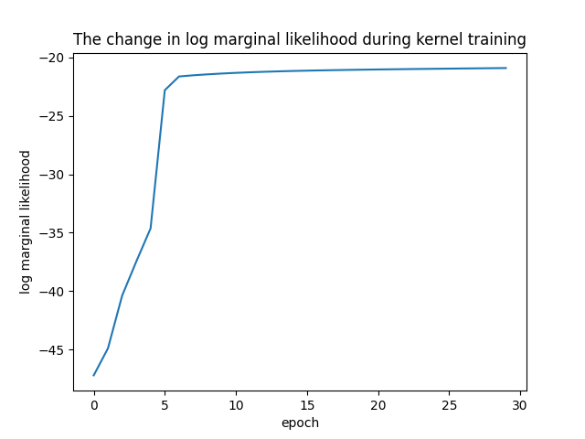
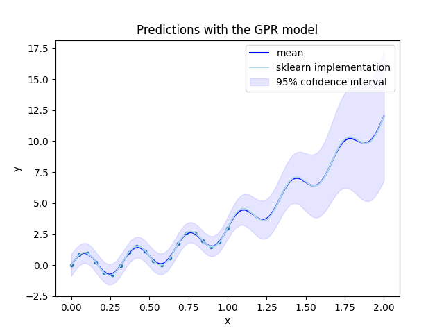
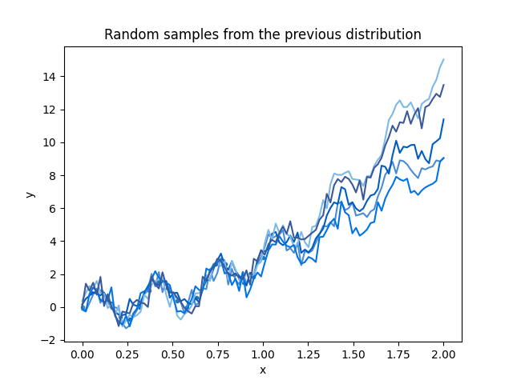

Note
Go to the end to download the full example code.
Gaussian Process Regressor (GPR)
This script demonstrates the use of a custom Gaussian Process Regressor (GPR) model with a compound kernel on generated data. The model is trained using a combination of a linear kernel and a periodic kernel, and the training process optimizes the kernel parameters to fit the data. The script also compares the custom GPR model with the GPR implementation from Scikit-learn using a different kernel combination.
- 
- 
- 
-64.25486611180071
Epoch: 1 - Log marginal likelihood: -47.20838069956678 - Parameters: {'linear_sigma_1': 10.268, 'linear_sigma_bias_1': 2.816, 'periodic_sigma_1': 0.721, 'periodic_corr_len_1': 2.137, 'periodic_period_1': -0.878}
Epoch: 2 - Log marginal likelihood: -44.89995514341253 - Parameters: {'linear_sigma_1': 10.265, 'linear_sigma_bias_1': 2.806, 'periodic_sigma_1': 0.734, 'periodic_corr_len_1': 2.128, 'periodic_period_1': -0.801}
Epoch: 3 - Log marginal likelihood: -40.383003289317486 - Parameters: {'linear_sigma_1': 10.262, 'linear_sigma_bias_1': 2.796, 'periodic_sigma_1': 0.767, 'periodic_corr_len_1': 2.112, 'periodic_period_1': -0.615}
Epoch: 4 - Log marginal likelihood: -37.45014028177578 - Parameters: {'linear_sigma_1': 10.259, 'linear_sigma_bias_1': 2.786, 'periodic_sigma_1': 0.844, 'periodic_corr_len_1': 2.074, 'periodic_period_1': -0.628}
Epoch: 5 - Log marginal likelihood: -34.627338017462904 - Parameters: {'linear_sigma_1': 10.256, 'linear_sigma_bias_1': 2.776, 'periodic_sigma_1': 0.927, 'periodic_corr_len_1': 2.029, 'periodic_period_1': -0.638}
Epoch: 6 - Log marginal likelihood: -22.800162315152015 - Parameters: {'linear_sigma_1': 10.253, 'linear_sigma_bias_1': 2.766, 'periodic_sigma_1': 3.732, 'periodic_corr_len_1': 1.979, 'periodic_period_1': -0.644}
Epoch: 7 - Log marginal likelihood: -21.624583046387347 - Parameters: {'linear_sigma_1': 10.25, 'linear_sigma_bias_1': 2.756, 'periodic_sigma_1': 3.729, 'periodic_corr_len_1': 1.979, 'periodic_period_1': -0.655}
Epoch: 8 - Log marginal likelihood: -21.525477575889283 - Parameters: {'linear_sigma_1': 10.247, 'linear_sigma_bias_1': 2.747, 'periodic_sigma_1': 3.727, 'periodic_corr_len_1': 1.979, 'periodic_period_1': -0.656}
Epoch: 9 - Log marginal likelihood: -21.44403062600159 - Parameters: {'linear_sigma_1': 10.244, 'linear_sigma_bias_1': 2.737, 'periodic_sigma_1': 3.722, 'periodic_corr_len_1': 1.979, 'periodic_period_1': -0.657}
Epoch: 10 - Log marginal likelihood: -21.3747193705255 - Parameters: {'linear_sigma_1': 10.241, 'linear_sigma_bias_1': 2.727, 'periodic_sigma_1': 3.708, 'periodic_corr_len_1': 1.979, 'periodic_period_1': -0.658}
Epoch: 11 - Log marginal likelihood: -21.315796042451975 - Parameters: {'linear_sigma_1': 10.238, 'linear_sigma_bias_1': 2.718, 'periodic_sigma_1': 3.688, 'periodic_corr_len_1': 1.979, 'periodic_period_1': -0.659}
Epoch: 12 - Log marginal likelihood: -21.265936265774833 - Parameters: {'linear_sigma_1': 10.236, 'linear_sigma_bias_1': 2.708, 'periodic_sigma_1': 3.67, 'periodic_corr_len_1': 1.979, 'periodic_period_1': -0.66}
Epoch: 13 - Log marginal likelihood: -21.223466011288405 - Parameters: {'linear_sigma_1': 10.233, 'linear_sigma_bias_1': 2.698, 'periodic_sigma_1': 3.653, 'periodic_corr_len_1': 1.979, 'periodic_period_1': -0.66}
Epoch: 14 - Log marginal likelihood: -21.186975068613247 - Parameters: {'linear_sigma_1': 10.23, 'linear_sigma_bias_1': 2.688, 'periodic_sigma_1': 3.638, 'periodic_corr_len_1': 1.979, 'periodic_period_1': -0.661}
Epoch: 15 - Log marginal likelihood: -21.155322303596606 - Parameters: {'linear_sigma_1': 10.227, 'linear_sigma_bias_1': 2.679, 'periodic_sigma_1': 3.625, 'periodic_corr_len_1': 1.979, 'periodic_period_1': -0.662}
Epoch: 16 - Log marginal likelihood: -21.127584934005704 - Parameters: {'linear_sigma_1': 10.224, 'linear_sigma_bias_1': 2.669, 'periodic_sigma_1': 3.613, 'periodic_corr_len_1': 1.979, 'periodic_period_1': -0.662}
Epoch: 17 - Log marginal likelihood: -21.10301972419547 - Parameters: {'linear_sigma_1': 10.221, 'linear_sigma_bias_1': 2.659, 'periodic_sigma_1': 3.602, 'periodic_corr_len_1': 1.979, 'periodic_period_1': -0.662}
Epoch: 18 - Log marginal likelihood: -21.0810211259209 - Parameters: {'linear_sigma_1': 10.218, 'linear_sigma_bias_1': 2.649, 'periodic_sigma_1': 3.592, 'periodic_corr_len_1': 1.979, 'periodic_period_1': -0.663}
Epoch: 19 - Log marginal likelihood: -21.061098280664936 - Parameters: {'linear_sigma_1': 10.215, 'linear_sigma_bias_1': 2.639, 'periodic_sigma_1': 3.583, 'periodic_corr_len_1': 1.979, 'periodic_period_1': -0.663}
Epoch: 20 - Log marginal likelihood: -21.042854490474415 - Parameters: {'linear_sigma_1': 10.212, 'linear_sigma_bias_1': 2.629, 'periodic_sigma_1': 3.575, 'periodic_corr_len_1': 1.979, 'periodic_period_1': -0.664}
Epoch: 21 - Log marginal likelihood: -21.0259636993229 - Parameters: {'linear_sigma_1': 10.209, 'linear_sigma_bias_1': 2.619, 'periodic_sigma_1': 3.568, 'periodic_corr_len_1': 1.979, 'periodic_period_1': -0.664}
Epoch: 22 - Log marginal likelihood: -21.01016436093522 - Parameters: {'linear_sigma_1': 10.206, 'linear_sigma_bias_1': 2.609, 'periodic_sigma_1': 3.562, 'periodic_corr_len_1': 1.979, 'periodic_period_1': -0.664}
Epoch: 23 - Log marginal likelihood: -20.995243243016592 - Parameters: {'linear_sigma_1': 10.203, 'linear_sigma_bias_1': 2.599, 'periodic_sigma_1': 3.556, 'periodic_corr_len_1': 1.979, 'periodic_period_1': -0.664}
Epoch: 24 - Log marginal likelihood: -20.981025896259542 - Parameters: {'linear_sigma_1': 10.2, 'linear_sigma_bias_1': 2.589, 'periodic_sigma_1': 3.551, 'periodic_corr_len_1': 1.979, 'periodic_period_1': -0.665}
Epoch: 25 - Log marginal likelihood: -20.967372389036296 - Parameters: {'linear_sigma_1': 10.197, 'linear_sigma_bias_1': 2.579, 'periodic_sigma_1': 3.546, 'periodic_corr_len_1': 1.979, 'periodic_period_1': -0.665}
Epoch: 26 - Log marginal likelihood: -20.954168230663342 - Parameters: {'linear_sigma_1': 10.195, 'linear_sigma_bias_1': 2.569, 'periodic_sigma_1': 3.541, 'periodic_corr_len_1': 1.979, 'periodic_period_1': -0.665}
Epoch: 27 - Log marginal likelihood: -20.94132006080747 - Parameters: {'linear_sigma_1': 10.192, 'linear_sigma_bias_1': 2.559, 'periodic_sigma_1': 3.537, 'periodic_corr_len_1': 1.979, 'periodic_period_1': -0.665}
Epoch: 28 - Log marginal likelihood: -20.928753048233272 - Parameters: {'linear_sigma_1': 10.189, 'linear_sigma_bias_1': 2.549, 'periodic_sigma_1': 3.533, 'periodic_corr_len_1': 1.979, 'periodic_period_1': -0.665}
Epoch: 29 - Log marginal likelihood: -20.916405312597703 - Parameters: {'linear_sigma_1': 10.186, 'linear_sigma_bias_1': 2.539, 'periodic_sigma_1': 3.53, 'periodic_corr_len_1': 1.979, 'periodic_period_1': -0.666}
Epoch: 30 - Log marginal likelihood: -20.904227697404338 - Parameters: {'linear_sigma_1': 10.183, 'linear_sigma_bias_1': 2.528, 'periodic_sigma_1': 3.527, 'periodic_corr_len_1': 1.979, 'periodic_period_1': -0.666}
{'k1': 2.8**2 * DotProduct(sigma_0=1.69e-05) ** 2, 'k2': ExpSineSquared(length_scale=0.91, periodicity=1), 'k1__k1': 2.8**2, 'k1__k2': DotProduct(sigma_0=1.69e-05) ** 2, 'k1__k1__constant_value': 7.83171142400337, 'k1__k1__constant_value_bounds': (1e-05, 100000.0), 'k1__k2__kernel': DotProduct(sigma_0=1.69e-05), 'k1__k2__exponent': 2, 'k1__k2__kernel__sigma_0': 1.691600703359425e-05, 'k1__k2__kernel__sigma_0_bounds': (1e-05, 100000.0), 'k2__length_scale': 0.9099451161918375, 'k2__periodicity': 0.9996844580177652, 'k2__length_scale_bounds': (1e-05, 100000.0), 'k2__periodicity_bounds': (1e-05, 100000.0)}
import torch
import matplotlib.pyplot as plt
from sklearn.gaussian_process import GaussianProcessRegressor as GPR
from sklearn.gaussian_process.kernels import DotProduct, ExpSineSquared, ConstantKernel, Matern as sk_matern
from DLL.MachineLearning.SupervisedLearning.GaussianProcesses import GaussianProcessRegressor
from DLL.MachineLearning.SupervisedLearning.Kernels import RBF, Linear, WhiteGaussian, Periodic, RationalQuadratic, Matern
from DLL.DeepLearning.Optimisers import ADAM, LBFGS
from DLL.Data.Preprocessing import StandardScaler
# device = torch.device("cuda") if torch.cuda.is_available() else torch.device("cpu")
device = torch.device("cpu")
X = torch.linspace(0, 1, 20, dtype=torch.float64, device=device).unsqueeze(1)
Y = torch.sin(3 * 2 * torch.pi * X) + 3 * X ** 2# + torch.randn_like(X) * 0.5
transformer = StandardScaler()
Y = transformer.fit_transform(Y).squeeze(dim=1)
train_kernel = True # try to changing this line of code to see how the covariance kernel learns the correct parameters
model = GaussianProcessRegressor(Linear(sigma=0.2, sigma_bias=1) ** 2 + Periodic(1, 2, period=0.5), noise=0.1, device=device)
sk_model = GPR(ConstantKernel(constant_value=0.2) * DotProduct(sigma_0=1) ** 2 + ExpSineSquared())
# correlation_length = 0.1
# nu = 0.5
# model = GaussianProcessRegressor(Matern(sigma=2, correlation_length=correlation_length, nu=nu), noise=0.0, device=device)
# sk_model = GPR(sk_matern(nu=nu, length_scale=correlation_length))
model.fit(X, Y)
print(model.log_marginal_likelihood())
if train_kernel:
# history = model.train_kernel(epochs=2000, optimiser=Adam(), verbose=True)
history = model.train_kernel(epochs=30, optimiser=LBFGS(model.log_marginal_likelihood, learning_rate=0.1), verbose=True)
plt.plot(history["log marginal likelihood"])
plt.xlabel("epoch")
plt.ylabel("log marginal likelihood")
plt.title("The change in log marginal likelihood during kernel training")
sk_model.fit(X, Y)
print(sk_model.kernel_.get_params())
x_test = torch.linspace(0, 2, 100, dtype=torch.float64, device=device).unsqueeze(1)
mean, covariance = model.predict(x_test)
mean = mean.squeeze()
mean = transformer.inverse_transform(mean)
covariance = covariance * transformer.var ** 2
std = torch.sqrt(torch.diag(covariance))
plt.figure()
plt.plot(X.cpu(), transformer.inverse_transform(Y).cpu(), ".")
plt.plot(x_test.cpu(), mean.cpu(), color="blue", label="mean")
plt.plot(x_test.cpu(), transformer.inverse_transform(torch.from_numpy(sk_model.predict(x_test.numpy()))), color="lightblue", label="sklearn implementation")
plt.fill_between(x_test.squeeze(dim=1).cpu(), mean.cpu() - 1.96 * std.cpu(), mean.cpu() + 1.96 * std.cpu(), alpha=0.1, color="blue", label=r"95% cofidence interval")
plt.legend()
plt.xlabel("x")
plt.ylabel("y")
plt.title("Predictions with the GPR model")
# draw random samples from the distribution
blue_theme = [
"#1f77b4", # blue
"#4a8cd3", # lighter blue
"#005cbf", # dark blue
"#7cb9e8", # sky blue
"#0073e6", # vivid blue
"#3b5998", # muted blue
]
plt.rcParams["axes.prop_cycle"] = plt.cycler(color=blue_theme)
try:
distribution = torch.distributions.MultivariateNormal(mean, covariance)
plt.figure()
plt.plot(X.cpu(), transformer.inverse_transform(Y).cpu(), ".")
for _ in range(5):
y = distribution.sample()
plt.plot(x_test.cpu(), y.cpu())
plt.xlabel("x")
plt.ylabel("y")
plt.title("Random samples from the previous distribution")
except:
pass
finally:
plt.show()
Total running time of the script: (0 minutes 11.913 seconds)